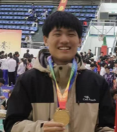
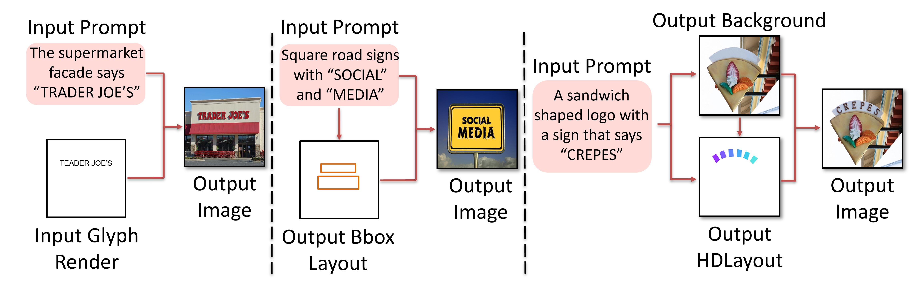

|
Tonghui Feng
I'm a second-year MSc student in Computer Science at Xidian University (XDU),
advised by Assoc. Prof. Xiaotian Qiao in Institute of Intelligent Media & Data Engineering (IMDE).
Prior to starting my MSc, I received my Bachelor's degree in Xidian University (XDU).
Email /
Github
|

|
Research
My research interests involve computer vision and deep learning.
I am currently interested in AI for Content Generation, including Text2Image Generation and Scene Layout Generation.
|
|

|
HDLayout: Hierarchical and Directional Layout Planning for Arbitrary Shaped Visual Text Generation
Tonghui Feng,
Chunsheng Yan,
Qianru Wang,
Jiangtao Cui,
Xiaotian Qiao*,
AAAI, 2025
We consider the modality gap between image and text, and propose a new separation and composition pipeline for flexible and controllable visual text generation from only text prompts.
At the core of our framework is a novel Hierarchical and Directional Layout representation, i.e., HDLayout, which can model the sequential and multi-granularity nature of the visual text.
|
|